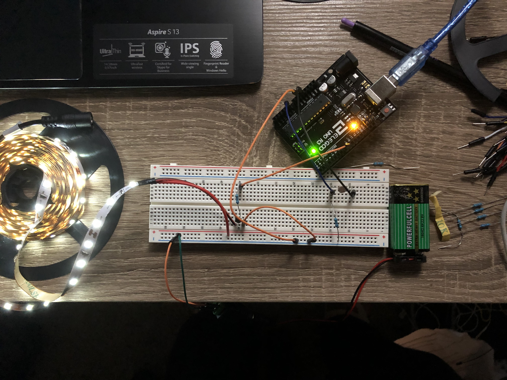
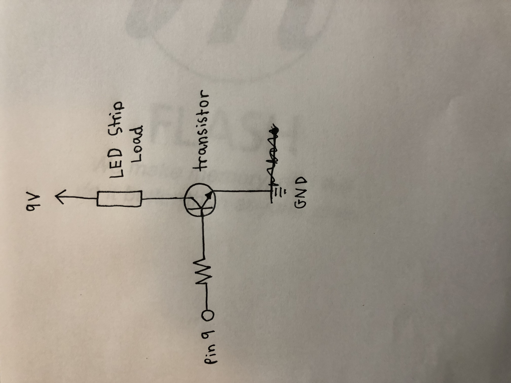

LED Strip Transistor Circuit!

In my breadboard I used two 220 ohm resistors and a transistor to balance the load of an LED strip with a 9V volt battery and be operated from a photoresistor.

My program prints the sensor and output values to the serial monitor!

I connected Pin 9 of my Arduino to a 220 ohm resistor and then to a transistor which was connected to the LED strip on one side and to ground and the 9V battery on the other. Similarly Pin A0 is connected to a 220 ohm resistor leading to ground and 9V on one side and to a photoresitor and 5V on the other. This schematic safely allows the transistor to ampfliy the current of the LED strip, while having the resistors balance out the load.
This GIF shows how light effects the LED strips in my circuit. When I cover the light around my photoresistor, my LEDs are signaled to turn down their brightness!